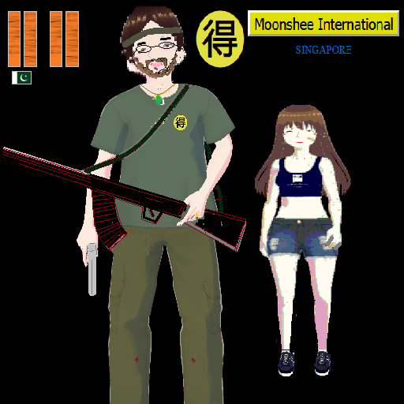
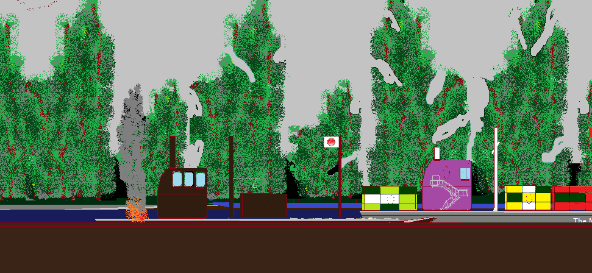
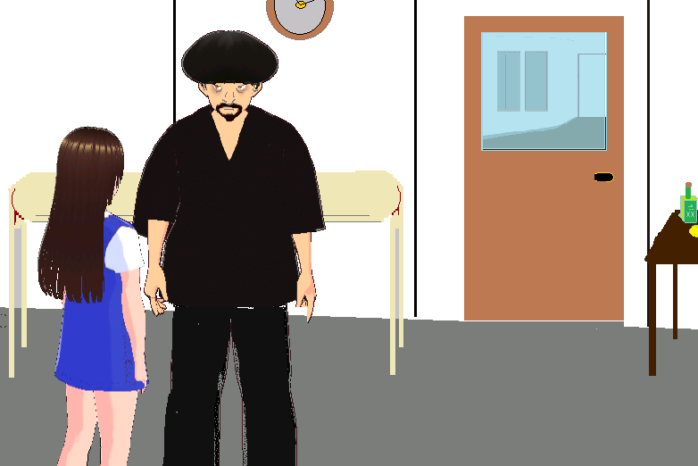
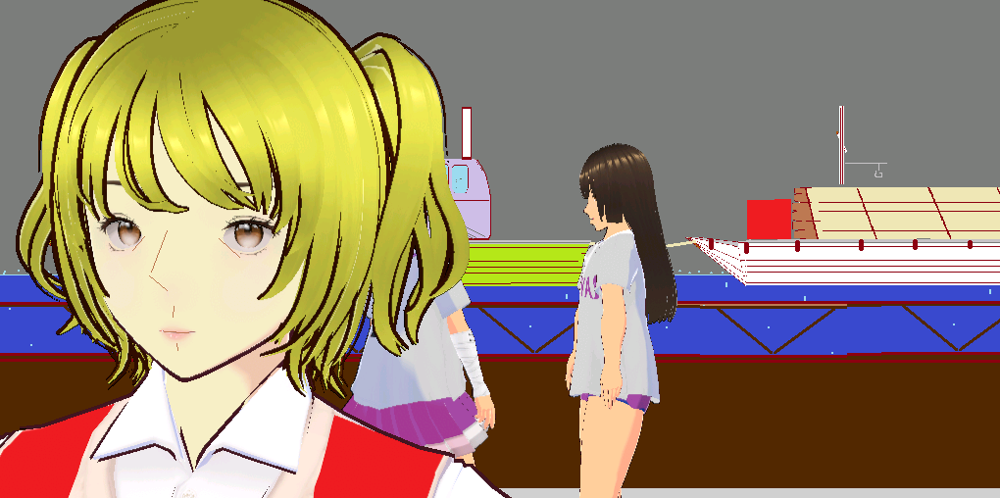
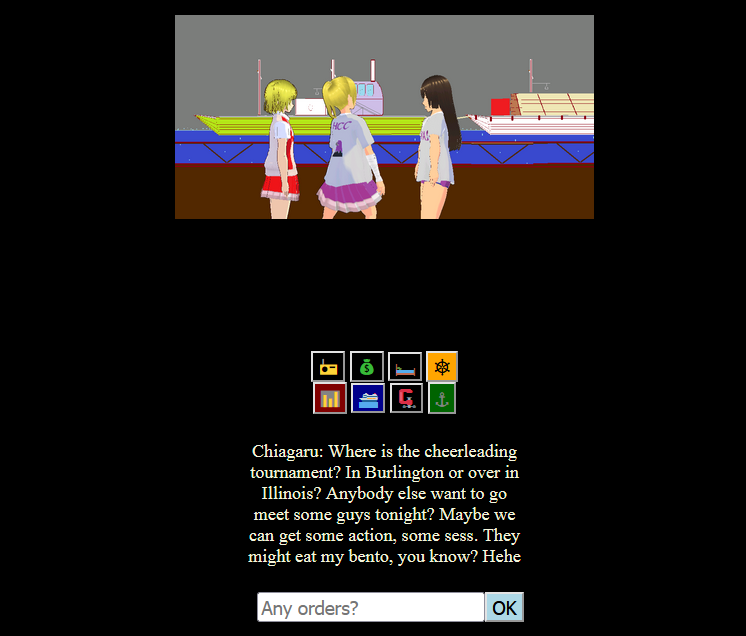
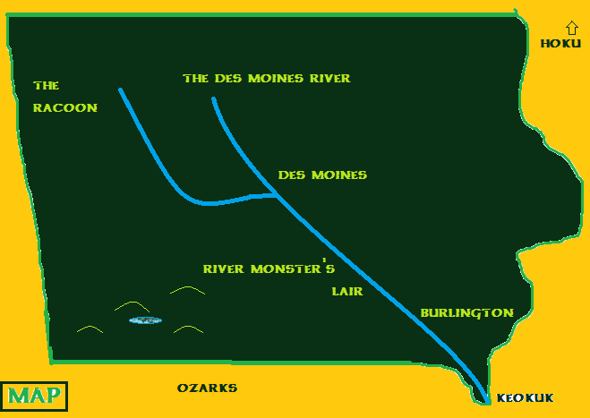

Moonshee International presents....
 |
RACOON RIVER FERRY Simulator
(Japanese Title: Chiagaru 5)
Game Imfo
This software simulates a SKD-10000 Ferry Boat as driven by the star of the Chiagaru Universe. Chiagaru is a freshman Junior College cheerleader with some Sea Scout experience and there was a crew and officer shortage so she was nominated. The boat is actually a ship, 350 feet long, 120 feet wide. Made in India circa 1985 but fully refurbished in 2014 with a fuel cell, solar panels and backup biodiesel engine along with many other features and extra options. The refurb was done at the shipyards in Yokohama with many NIHONSEI parts and equipment like the quartz countertops in the kitchen and the Mitsubishi walk-in.

This vessel featured in the simulator is called The Bicycle, formerly known as The River Rosie and some people still refer to the old name. She was purchased by Lance Legstrom of Austin, Texas in 2019 for the tidy sum of $65 million dollars and transferred to Des Moines in order to tap the rich Racoon and Des Moines River markets. Lance is the former Tour de France participant. However, Monsieur Legstrom discovered that the Racoon has not been dredged effectively and there are low bridges so for those reasons plus the filthy lucre, The Bicycle now works primarily on the Des Moines River and sub-contracts the Racoon River runs like the mail run for USPS in favour of the veggie burger run from a veggie burger plant down the Mississippi all the way over in Texas because that route comes with a few free samples. The load from Texas is hauled over land via FTL and then heads up the mighty Mississippi to the Des Moines River and then up the Racoon to the headwaters where the hungry customers await. Chiagaru must guide the ship and keep the veggie burgers safe and fresh. Therefore, the ship's cooler must be closely monitored after pickups in Keokuk or other ports such as Rock Island, Davenport, Mobile or Havana.
CHIAGARU
BRIDGE CONTROLS
To save fuel, some river boat captains cut the engines and float down the stream using the current. However, this works best from Des Moines to Keokuk. When running Mobile to Davenport or Rock Island, then engine power is certainly required due to the currents.
The main twin engine, which is a 100 Mega-Volt twin-turbo fuel cell, must be engaged in order to use the thrusters. When the fuel cell is off, there is a large magnetic field set up which prevents the thrusters from being moved like how an electric motor works like a generator in reverse. If you try to turn an electric motor backwards, it is very difficult because of the EMF. This ship is all electric, so we have features like locking thrust sliders because, when you turn on the fuel cells main transformer, you want the standing voltage to be fairly low, not 100% full power, that could cause a short or damage the transformer and power switching equipment.
If you click the SOLAR CELL button, the voltage will update and provide the latest reading.
TURBO button engages the twin turbos. No burning nitro, it is eco-friendly, uses electrical and solar power.
The directional buttons on the keypad are for tight maneuvers like manual docking, for example.
To reverse, use the down button on the keypad. To go forward again, click on the up button on the keypad. Keep in mind, the ship sometimes backs loads along routes, so the crew has been trained to back up the ship and still complete the route. Therefore, if you forgot something at the last port and need to back up and turn around, you need to use the radio and inform the crew and make the maneuver from the bridge. The reverse thrusters alone will not cause the ship to turn around. They cause the ship instead to fight the currents often and spin in place which is a hazard for other ship traffic and keep in mind the width of the channel.
The RADIO options are there above the automated ship steering controls.
Next to the MAP button is a link to the instruction manual that came with the boat.
To operate the ship, you need to turn the fuel cells on by clicking the on button. The vertical sliders operate twin turbo thrusters. The route goes from DSM to Keokuk and back generally, however, there may be runs to Mobile, New Orleans, Charleston, Houston if the captain qualifies - state license required to operate this capesize ship. Push NAV to navigate and determine location along with MAP button. When you are near the grainery you can select the NAV button to auto-dock the ship safely. The loading will begin under the direction of the 1st Mate and when done you can select the anchor option and the NAV option and then LEAVE PORT option to continue on to the next job. Generally, the company is hired to haul grain from the Upper Racoon River to Keokuk for transfer to other vessels. In Keokuk, the company often charters the vessel for hauling equipment up the Des Moines River to the mouth of the Racoon River where the equipment is fully offloaded and transferred to waiting tractor trailers where it is taken to distribution warehouses generally or sometimes taken out of state to South Dakota for a new semiconductor plant going in there. The Racoon River and Des Moines River often run low in late summer so try to finish your runs on time. In the spring the currents can run very strongly so when bidding on spring runs add a little extra time.
To play free online click here
Watch trailer
(Japanese Title: Chiagaru 5)
Game Imfo

This software simulates a SKD-10000 Ferry Boat as driven by the star of the Chiagaru Universe. Chiagaru is a freshman Junior College cheerleader with some Sea Scout experience and there was a crew and officer shortage so she was nominated. The boat is actually a ship, 350 feet long, 120 feet wide. Made in India circa 1985 but fully refurbished in 2014 with a fuel cell, solar panels and backup biodiesel engine along with many other features and extra options. The refurb was done at the shipyards in Yokohama with many NIHONSEI parts and equipment like the quartz countertops in the kitchen and the Mitsubishi walk-in.
This vessel featured in the simulator is called The Bicycle, formerly known as The River Rosie and some people still refer to the old name. She was purchased by Lance Legstrom of Austin, Texas in 2019 for the tidy sum of $65 million dollars and transferred to Des Moines in order to tap the rich Racoon and Des Moines River markets. Lance is the former Tour de France participant. However, Monsieur Legstrom discovered that the Racoon has not been dredged effectively and there are low bridges so for those reasons plus the filthy lucre, The Bicycle now works primarily on the Des Moines River and sub-contracts the Racoon River runs like the mail run for USPS in favour of the veggie burger run from a veggie burger plant down the Mississippi all the way over in Texas because that route comes with a few free samples. The load from Texas is hauled over land via FTL and then heads up the mighty Mississippi to the Des Moines River and then up the Racoon to the headwaters where the hungry customers await. Chiagaru must guide the ship and keep the veggie burgers safe and fresh. Therefore, the ship's cooler must be closely monitored after pickups in Keokuk or other ports such as Rock Island, Davenport, Mobile or Havana.

CHIAGARU

There is a cheerleading tournament in the Keokuk area and so Chiagaru and her team are en route. They decided to take a nice river cruise but unfortunately, the captain Lance is on vacation and the regular 1st Mate quit and so Chiagaru ended up as captain of the vessel due to a brief stint in the Sea Scouts of Allemagne that Chiagaru briefly served in. The cruise was set to be cancelled and the business manager was there at the dock putting up a flyer when Chiagaru spoke with him and convinced him to let the cruise go on due to the importance of the tri-state chiagaru tournament. Chiagaru was happy to know that in exchange for her service as boat captain, her voyage fare was waived, however, her teammates still had to pay their fare and many paid with crypto when they boarded at the DSM terminal. Somehow the ship departed on time.
BRIDGE CONTROLS
To save fuel, some river boat captains cut the engines and float down the stream using the current. However, this works best from Des Moines to Keokuk. When running Mobile to Davenport or Rock Island, then engine power is certainly required due to the currents.
The main twin engine, which is a 100 Mega-Volt twin-turbo fuel cell, must be engaged in order to use the thrusters. When the fuel cell is off, there is a large magnetic field set up which prevents the thrusters from being moved like how an electric motor works like a generator in reverse. If you try to turn an electric motor backwards, it is very difficult because of the EMF. This ship is all electric, so we have features like locking thrust sliders because, when you turn on the fuel cells main transformer, you want the standing voltage to be fairly low, not 100% full power, that could cause a short or damage the transformer and power switching equipment.
If you click the SOLAR CELL button, the voltage will update and provide the latest reading.
TURBO button engages the twin turbos. No burning nitro, it is eco-friendly, uses electrical and solar power.
The directional buttons on the keypad are for tight maneuvers like manual docking, for example.
To reverse, use the down button on the keypad. To go forward again, click on the up button on the keypad. Keep in mind, the ship sometimes backs loads along routes, so the crew has been trained to back up the ship and still complete the route. Therefore, if you forgot something at the last port and need to back up and turn around, you need to use the radio and inform the crew and make the maneuver from the bridge. The reverse thrusters alone will not cause the ship to turn around. They cause the ship instead to fight the currents often and spin in place which is a hazard for other ship traffic and keep in mind the width of the channel.
The RADIO options are there above the automated ship steering controls.
Next to the MAP button is a link to the instruction manual that came with the boat.

To operate the ship, you need to turn the fuel cells on by clicking the on button. The vertical sliders operate twin turbo thrusters. The route goes from DSM to Keokuk and back generally, however, there may be runs to Mobile, New Orleans, Charleston, Houston if the captain qualifies - state license required to operate this capesize ship. Push NAV to navigate and determine location along with MAP button. When you are near the grainery you can select the NAV button to auto-dock the ship safely. The loading will begin under the direction of the 1st Mate and when done you can select the anchor option and the NAV option and then LEAVE PORT option to continue on to the next job. Generally, the company is hired to haul grain from the Upper Racoon River to Keokuk for transfer to other vessels. In Keokuk, the company often charters the vessel for hauling equipment up the Des Moines River to the mouth of the Racoon River where the equipment is fully offloaded and transferred to waiting tractor trailers where it is taken to distribution warehouses generally or sometimes taken out of state to South Dakota for a new semiconductor plant going in there. The Racoon River and Des Moines River often run low in late summer so try to finish your runs on time. In the spring the currents can run very strongly so when bidding on spring runs add a little extra time.
To play free online click here
Watch trailer
© Dokyo Entertainment Ltd in conjunction with FH Engineering, Crystal World, Delta College, Kagaku International and Moonshee Worldwide (c)2026